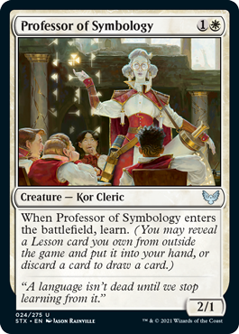

Hi, my name is Zander Lynch
I am a 1st year PhD student in the Department of Linguistics at Cornell University. My undergraduate education was at the University of Massachusetts, Amherst where I completed a BA in Linguistics, a BS in Biochemistry and Molecular Biology, and a minor in Latin in 2023.
My research interests are centered in the subfields of psycholinguistics and historical linguistics, where I use various methodologies including eyetracking and corpus analysis to examine questions about adjectives and their ordering. My current eyetracking project focuses on the relationship between the semantic categorizations of adjectives and how they are ordered and comprehended. A more in depth description of the project can be found on the research page.
I am a member of the Linguistic Meaning (LiMe) lab under Dr. Helena Aparicio at Cornell University. I am also a member-at-large of the Binding at UMass (BUMASA) research group led by Dr. Brian Dillon.
Outside of the wonderful world of languages, I can be found in a shady spot reading doorstopper size science fiction and fantasy (book recommendations are always welcome), walking in scenic locales, and playing Magic the Gathering.
